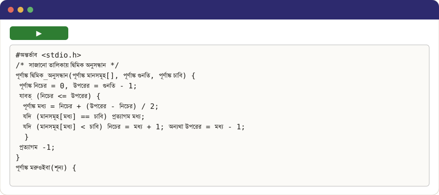

মৈতৈলোন্
Programming in your own language
Shaili Robot
Write what the robot should do, or tap the buttons. In Simple, the first letter of a word is enough.
Your language in the IDE

The notebook for this language
A notebook is a page where you write a program and run it, one cell at a time. Colab, Google's notebook service, runs it in your browser, even on a phone, with nothing to install: open it, press ▶ on Installation, then try the programs.
Examples in every style (shaili)
C✓ built and ran
#অন্তর্ভাব <stdio.h>
/* সাজানো তালিকায় দ্বিমিক অনুসন্ধান */
পূর্ণাঙ্ক দ্বিমিক_অনুসন্ধান(পূর্ণাঙ্ক মানসমূহ[], পূর্ণাঙ্ক গুনতি, পূর্ণাঙ্ক চাবি) {
পূর্ণাঙ্ক নিচের = 0, উপরের = গুনতি - 1;
যাবত্ (নিচের <= উপরের) {
পূর্ণাঙ্ক মধ্য = নিচের + (উপরের - নিচের) / 2;
যদি (মানসমূহ[মধ্য] == চাবি) প্রত্যাগম মধ্য;
যদি (মানসমূহ[মধ্য] < চাবি) নিচের = মধ্য + 1; অন্যথা উপরের = মধ্য - 1;
}
প্রত্যাগম -1;
}
পূর্ণাঙ্ক মরুওইবা(শূন্য) {
পূর্ণাঙ্ক মানসমূহ[] = {2, 5, 8, 12, 16, 23, 38, 56, 72, 91};
printf("%d %d\n", দ্বিমিক_অনুসন্ধান(মানসমূহ, 10, 23), দ্বিমিক_অনুসন্ধান(মানসমূহ, 10, 7));
প্রত্যাগম 0;
}
C++✓ built and ran
#অন্তর্ভাব <cstddef>
// দ্বিমিক অনুসন্ধান বৃক্ষের শ্রেণি, সি++ এ
#অন্তর্ভাব <iostream>
বর্গ অনুসন্ধান_বৃক্ষ {
সংরচনা বৃক্ষ_গ্রন্থি { পূর্ণাঙ্ক চাবি; বৃক্ষ_গ্রন্থি *বাম = রিক্ত, *ডান = রিক্ত; };
বৃক্ষ_গ্রন্থি *মূল = রিক্ত;
বৃক্ষ_গ্রন্থি *ঢোকাও(বৃক্ষ_গ্রন্থি *গ্রন্থি, পূর্ণাঙ্ক চাবি) { যদি (!গ্রন্থি) { গ্রন্থি = নূতন বৃক্ষ_গ্রন্থি; গ্রন্থি->চাবি = চাবি; প্রত্যাগম গ্রন্থি; } যদি (চাবি < গ্রন্থি->চাবি) গ্রন্থি->বাম = ঢোকাও(গ্রন্থি->বাম, চাবি); অন্যথা গ্রন্থি->ডান = ঢোকাও(গ্রন্থি->ডান, চাবি); প্রত্যাগম গ্রন্থি; }
শূন্য মধ্যক্রম(বৃক্ষ_গ্রন্থি *গ্রন্থি) { যদি (!গ্রন্থি) প্রত্যাগম; মধ্যক্রম(গ্রন্থি->বাম); std::cout << গ্রন্থি->চাবি << " "; মধ্যক্রম(গ্রন্থি->ডান); }
সার্বজনিক:
শূন্য ঢোকাও(পূর্ণাঙ্ক চাবি) { মূল = ঢোকাও(মূল, চাবি); }
শূন্য print() { মধ্যক্রম(মূল); std::cout << std::endl; }
};
পূর্ণাঙ্ক মরুওইবা() { অনুসন্ধান_বৃক্ষ বৃক্ষ; পূর্ণাঙ্ক চাবিগুলি[] = {5, 3, 8, 1, 4}; প্রতি (পূর্ণাঙ্ক চাবি : চাবিগুলি) বৃক্ষ.ঢোকাও(চাবি); বৃক্ষ.print(); প্রত্যাগম 0; }
Java✓ lowered to its host language
// স্তূপের শ্রেণি, জাভায়
সার্বজনিক বর্গ স্তূপ {
গুপ্ত পূর্ণাঙ্ক[] বস্তুসমূহ = নূতন পূর্ণাঙ্ক[16];
গুপ্ত পূর্ণাঙ্ক শীর্ষ = 0;
সার্বজনিক শূন্য ঠেলো(পূর্ণাঙ্ক মান) { বস্তুসমূহ[শীর্ষ++] = মান; }
সার্বজনিক পূর্ণাঙ্ক বের_করো() { প্রত্যাগম বস্তুসমূহ[--শীর্ষ]; }
সার্বজনিক স্থির শূন্য মরুওইবা(পদাবলী[] args) {
স্তূপ বস্তুসমূহ = নূতন স্তূপ();
প্রতি (পূর্ণাঙ্ক মান = 1; মান <= 3; মান++) বস্তুসমূহ.ঠেলো(মান * 10);
System.out.println(বস্তুসমূহ.বের_করো() + " " + বস্তুসমূহ.বের_করো());
}
}
Lex✓ built and ran
%{
#অন্তর্ভাব <stdio.h>
পূর্ণাঙ্ক শব্দগুলি = 0, সারিগুলি = 0;
%}
%%
[a-zA-Z]+ { শব্দগুলি++; }
\n { সারিগুলি++; }
. { }
%%
পূর্ণাঙ্ক yywrap(শূন্য) { প্রত্যাগম 1; }
পূর্ণাঙ্ক মরুওইবা(শূন্য) { yylex(); printf("%d words, %d lines\n", শব্দগুলি, সারিগুলি); প্রত্যাগম 0; }
Yacc✓ built and ran
%{
#অন্তর্ভাব <stdio.h>
#অন্তর্ভাব <ctype.h>
পূর্ণাঙ্ক yylex(শূন্য);
শূন্য yyerror(ধ্রুব বর্ণ *বার্তা) { fprintf(stderr, "%s\n", বার্তা); }
%}
%token অঙ্ক
%%
প্রবেশ: | প্রবেশ সারি ;
সারি: '\n' | রাশিমালা '\n' { printf("%d\n", $1); } ;
রাশিমালা: মান | রাশিমালা '+' মান { $$ = $1 + $3; } ;
মান: অঙ্ক | মান '*' অঙ্ক { $$ = $1 * $3; } ;
%%
পূর্ণাঙ্ক yylex(শূন্য) {
পূর্ণাঙ্ক প্রতীক = getchar();
যাবত্ (প্রতীক == ' ') প্রতীক = getchar();
যদি (isdigit(প্রতীক)) { yylval = প্রতীক - '0'; যাবত্ (isdigit(প্রতীক = getchar())) yylval = yylval * 10 + প্রতীক - '0'; ungetc(প্রতীক, stdin); প্রত্যাগম অঙ্ক; }
প্রত্যাগম প্রতীক == EOF ? 0 : প্রতীক;
}
পূর্ণাঙ্ক মরুওইবা(শূন্য) { প্রত্যাগম yyparse(); }